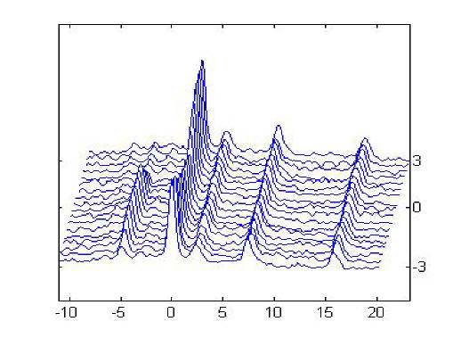
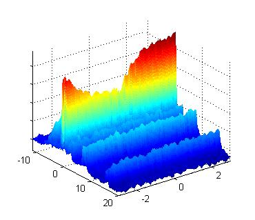
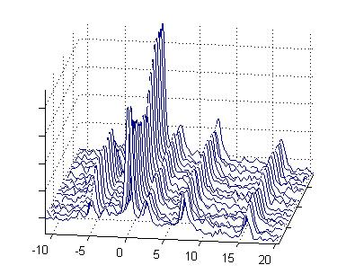
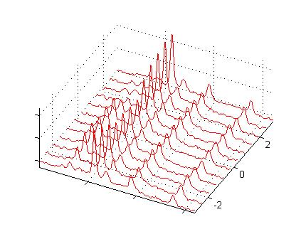
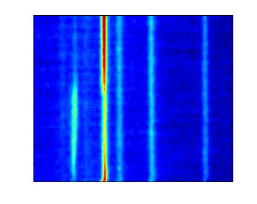

stackedplot
STACKEDPLOT produces a 3D-like view of a 2D stacked set of spectra.
Contents
Syntax
figh = stackedplot(z,style,spacing,labels,varargin)
Description
Stacked plots are commonly seen in NMR spectroscopy. They often illustrate
the evolution of spectra with time or some other parameter. There are several
(somewhat equivalent) methods to produce such plots in Matlab. This function
serves as a common interface to these various methods. Certainly some methods
may be evoked directly, e.g. mesh, but some others are not as obvious,
e.g. plot3. In addition a method (style 1) has been added that produces the
traditional stacked plot format.
The purpose of this function is to educate through sample code and to provide
the user access to these additional choices. Select the method you like best.
- "z" is a two dimensional array to plot.
First dimension is the spectroscopic axis.
Second dimension has the various spectra or plots (e.g. along time).
- "style" (optional) a number or string that selects the method and style
for the stacked plot.
- "1" or "s" (default) performs a traditional stacked plot.
This is not a 3D plot. The view cannot be rotated and there is no control over z tick labels.
- "2" or "m" performs a surface mesh plot (see mesh).
This is a 3D plot and the camera view may be rotated.
- "3" or "mc" performs a surface mesh plot with mesh lines along dim 1 (see
mesh).
This is a 3D plot and the camera view may be rotated.
- "4" or "p" uses plot3.
This is a 3D line plot and the camera view may be rotated.
- "5" or "i" uses imagesc.
Technically this is not a stacked plot, but is provided as an
alternative view that may be useful.
This style simply plots the data as an image as looking from above.
Vertical axis is the second dimension for the data.
- "labels" controls appearance of tick labels on the axes. If it is a single element then it must be one of the following:
- {0, 'none'} - axis tick labels are removed (default).
- {1, 'x'} - only x-axis (dim 1) tick labels are kept.
- {2, 'y'} - only y-axis (dim 2) tick labels are kept.
- {3, 'xy'} - only x & y-axis tick labels are kept.
- {4, 'all'} - all axis tick labels are kept.
- if "labels" is numeric and has more than one element [2,4,or 6] then
- if a 2 element column vector, only x-axis tick labels are created.
- if a 2 element row vector, only y-axis tick labels are created.
- if a 4 element vector, then x & y tick labels are created.
- if a 6 element vector, then x, y, & z tick labels are created.
- Each axis "labels" has 2 elements [min, max].
To reverse the order of the labels specify in reverse order as [max,
min].
- "spacing" (optional) is a positive integer specifying the spacing along
dim 2.
e.g. 4 specifies that every fourth point is plotted (default=1).
It is useful to reduce the density of points along the second dimension.
This is especially true for styles 1,3 and 4.
- "style" (optional) a number or string that selects the method and style
for the stacked plot.
- "1" or "s" (default) performs a traditional stacked plot.
This is not a 3D plot. The view cannot be rotated and there is no control over z tick labels.
- "2" or "m" performs a surface mesh plot (see mesh).
This is a 3D plot and the camera view may be rotated.
- "3" or "mc" performs a surface mesh plot with mesh lines along dim 1 (see mesh).
This is a 3D plot and the camera view may be rotated.
- "4" or "p" uses plot3.
This is a 3D line plot and the camera view may be rotated.
- "5" or "i" uses imagesc.
Technically this is not a stacked plot, but is provided as an
alternative view that may be useful.
This style simply plots the data as an image as looking from above.
Horizontal axis is the second dimension for the data.
- "varargin" (optional) can be any number of arguments as needed that are passed along
to the plotting commands.
Thus this depends upon the plot sytle as follows:
- Style
1 - (offset, linespec, numyticks)
- 1st arg is offset, which is specified as a fraction of the data range.
This value represents the total offset displacement along each axis.
If a single element then value is repeated for both axes.
If two elements then [xoffset,yoffset] (default = [0.1,0.8]).
- 2nd arg is linespec, see Matlab help for "line" (default: 'b').
- 3rd arg is numyticks (number of y ticks).
Remember to specify a y tick vector for "labels".
- Style 2 - Any property that is valid for mesh, see Matlab help.
- Style 3 - Any property that is valid for mesh, see Matlab help.
- Style 4 - Any property or linespec that is valid for plot3, see Matlab help.
- Style 5 - clims value, see Matlab help on imagesc.
- "figh" (optional) is the figure handle.
Plots are made on the current figure, if no figure exists then one is created.
Examples
Stacked plots of in-vivo 31P NMR spectra collected during exercise and
recovery.
stackedplot(z,1,10,[-11.1,20.2,-3,3],[0.1,1.2],3)
Style 1 (traditional) stacked plot of every tenth spectra with x & y offsets of 0.1 & 1.2,
and x & y tick labels with 3 ytick labels. To change angle of view
change x & y offsets.

stackedplot(z,2,10,[-11.1,20.2,-3,3])
Style 2 (mesh surface plot) stacked plot, every tenth spectra, with x & y tick labels.
View can be rotated.

stackedplot(z,3,10,[-11.1,20.2]')
Style 3 (mesh surface plot with column mesh style) stacked plot,
every tenth spectra, with x tick labels
(note column tick vector).
View is rotated.

stackedplot(z,4,15,[-3,3],'r')
Style 4 stacked plot (uses plot3), every 15th spectra, with y tick labels
(note row tick vector).
View is rotated.

stackedplot(z,5)
Style 5 stacked plot (uses imagesc).

See Also
mesh, plot3, imagesc
Back to Top
© 2009 Mirtech, Inc.